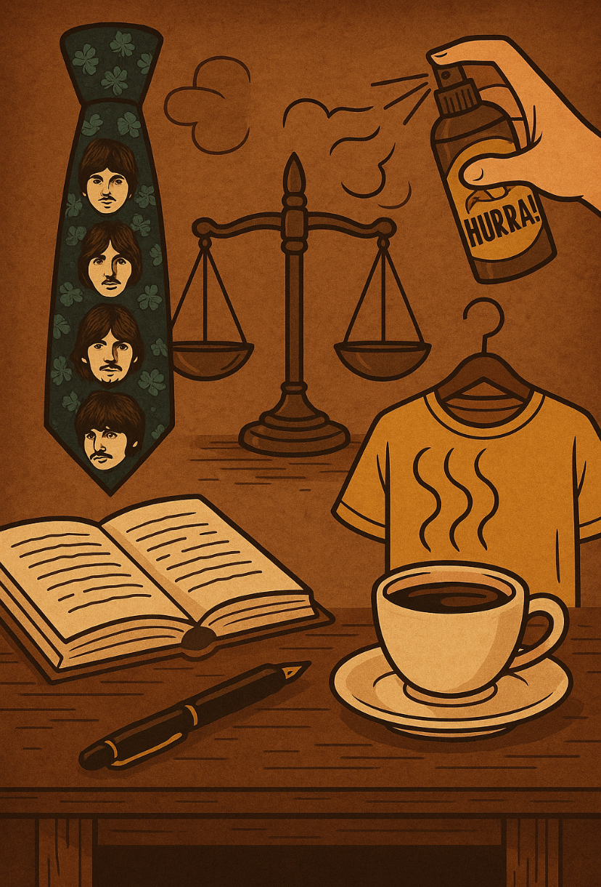

👔 Estilo
Corbatitas temáticas
Diseños inspirados en leyes, balanzas y frases célebres. Para audiencias con estilo.
Donde la justicia se sirve en taza — y el estilo presenta su mejor alegato.
Quiero ser jurado fundadorUn ecosistema creativo que mezcla el mundo legal con café de especialidad, productos con diseño y contenidos cercanos. Corbatitas temáticas, FritHurra!, kits de autocuidado, asesorías y eventos: la justicia, servida en taza y con humor.

Diseños inspirados en leyes, balanzas y frases célebres. Para audiencias con estilo.
Spray textil que elimina el olor a fritura. Deja tu correo y te avisamos.
Quiero que me avisenResaquit® y esenciales para jornadas intensas — con humor y cuidado.
Orientación práctica, lenguaje humano y foco en soluciones reales.
Debates, tutorías, presentaciones de libros y networking profesional.
Tazas, libretas, café en grano y ediciones limitadas para regalo.
Asesoría clara y humana para personas, profesionales y empresas.
Evaluación preliminar del caso y próximos pasos sugeridos. Derivación cuando corresponda.
Apoyo en escritos, recopilación de antecedentes y preparación de argumentos clave.
Preparación para audiencias, simulación de preguntas y checklist de evidencias.
Capacitaciones, políticas internas y diagnósticos de riesgo legal para equipos.
*La orientación no constituye patrocinio ni reemplaza el consejo de un abogado habilitado para litigar.
Practica alegatos, objeciones y examen de testigos en un entorno controlado.
Reservar simulaciónMesas para grupos, pizarras y ambiente silencioso. Ideal para preparar exámenes.
Sesiones de repaso, mapas de casos y técnicas de argumentación oral.
Análisis de fallos, ética y tendencias del sistema de justicia.
Estilo con sentencia firme para audiencias, cátedras o la oficina.
Avísenme cuando esténFrase minimal en diagonal; argumento final para cualquier outfit.
Quiero estaPruebas: abogados con ojeras, estudiantes maratonistas del Código y expedientes eternos. Veredicto: Café Judicial — un lugar para pensar, estudiar, debatir y, por qué no, reírse un rato.
Madera oscura, lámparas de biblioteca y mesas con nombres de casos históricos.
Telas, microtipografía y símbolos jurídicos para diseños elegantes.
Cómo funciona el spray textil y por qué será tu aliado para volver impecable.
Evaluamos ubicaciones en Santiago. Súmate como jurado fundador y te avisamos.
Estamos cerrando prototipos y proveedores. Abriremos preventa a la lista.
¡Sí! Escríbenos con tu idea; nos encanta co-crear con la comunidad.
Súmate como jurado fundador: recibe noticias, preventas y acceso a la inauguración.
Quiero participaro escríbenos a contacto@cafejudicial.cl